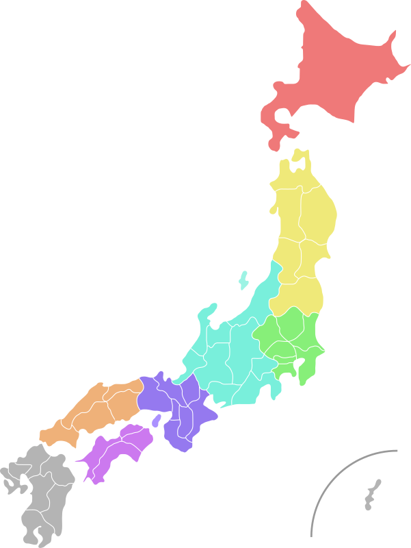

What is Kankan Kankou?
Kankan Kankou is a one-stop site for individuals who are interested in traveling to the Kanto and Kansai areas of Japan.
Our name comes from three Japanese words:
- 関東 [Kantou]: One of the regions of Japan, located in the east
- 関西 [Kansai]: A region in southern Japan
- 観光 [Kankou]: The Japanese word for "tourism" and "sightseeing"
We offer short guides on places to see, places to eat, etiquette, and other travel topics that you may need to know or are curious about prior to visiting Japan.
Why should I visit the Kanto and Kansai areas of Japan?
Both the Kanto and Kansai regions give first-time visitors a glimpse into Japanese culture and history in their own unique ways. Whether you are visiting the famous Osaka Castle, Tokyo Tower, or Nara Park, you will be sure to find something that piques your interest.
These areas are also quite foreigner-friendly, as they are often hosts to tourists from around the world, so there is not much of a language barrier to be concerned about.


Is Kankan Kankou a travel site?
Yes and no.
Kankan Kankou can help you plan your trip to Japan by providing very general information about the country, its customs, and the like. However, we do not provide
air travel services, tickets, reservation services for dining, lodging, etc., or any additional services that may fall under such categories.